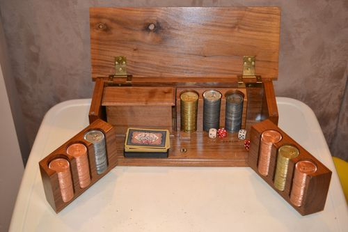

Regele poker-ului profesionist, Doyle Brunson a inventat jocul Texas Hold’em așa cum îl știm noi astăzi. Născut în Longworth, Fisher County, Texas, la data de 10 august 1933, Doyle s-a dovedit a fi un atlet foarte promițător încă din tinerețe. A urmat cursurile universității Hardin-Simmons din Abilene, Texas, și a avut șansa de a deveni un mare jucător de baschet. Din nefericire, s-a accidentat la genunchi și a trebuit să renunțe la visul de a deveni faimos în lumea baschetului. După absolvire, a făcut un master în științe administrative. Apoi a lucrat la Burroughs Corporation, ca agent de vânzări, însă a renunțat la slujbă după doar câteva săptămâni și a început să joace poker full time. S-a stabilit apoi în Las Vegas, Nevada, și a devenit părintele unanim recunoscut al jocului de poker.
Cunoscutul interlop clujean Nelson Mondialu a povestit, în direct, la emisiunea Acces Direct cum a reuşit să adune atâţia bani pentru a trăi în lux. La întrebarea „cu ce vă ocupaţi”, interlopul clujean a oferit un răspuns ironic, în stilu-i caracteristic. „Aruncarea cu privirea după câte o doamnă. Am ‘veveriţa’ mea care îmi produce bani. Din ce să îmi câştig banii, doamnă, dacă sunt pensionar, am fost paraşutist la viaţa mea. Îmi pică bani din cer, ca să înţelegeţi. Nu sunt infractor, nu vedeţi că sunt comediant”, a spus Nelson. Nelson a scos din buzunar un teanc de câteva sute de euro, „bani de buzunar”, aşa cum le spune el, iar Adriana Bahmuţeanu a insistat să afle cum a produs atâţia bani. Interlopul clujean a răspuns, din nou, ironic. „Lăsaţi-i pe ăia de la DNA să se intereseze cum am produs banii, nu vă interesează pe voi. Nu sunt cercetat penal şi nici nu o să fiu pentru că am dovezi şi facturi”, a comentat Nelson. La întrebarea, ‘de ce nu vă faceţi dinţii’, Nelson a comentat. „Pentru că am o emisiune care îmi oferă 400 de euro pe lună , care îmi plăteşte lumina, gazul, cheltuielile la bloc, şcoala la copil, numai să nu-mi pun ‘gardul’ (n.r. dinţii). Am contract cu emisiunea aia şi nu-mi dă voie să îmi pun dinţi”, a spus Nelson.
Cea mai cunoscută variantă - în România - este probabil, cea în care se împart câte 5 cărți tuturor jucătorilor, fiecare jucător având dreptul să schimbe ulterior cel mult 3 cărți, în speranța formării unor formații câștigătoare. Pokerul (poker englez) este un joc de cărți al cărui scop este acela de a câștiga pariuri colectând cea mai înaltă mână de poker posibil folosind 4 (versiunea veche clasică), 2 sau 5 cărți sau obligând toți adversarii să înceteze participarea la joc. Jocul de poker, a câștigat foarte multă popularitate în ultimii ani la nivel global și a devenit de la o activitate recreațională practicată de grupuri mici de persoane, o industrie în care se învârt milioane de dolari. Odată cu anul 2005 a început să ia amploare și în România jocul de Texas Hold'em care acum a depășit ca popularitate varianta clasică cu cinci cărți care mai este populară doar în rândul persoanelor mai în vârstă. Formațiile de cărți câștigătoare sunt, în ordine crescătoare:
o pereche (două cărți la fel, ex: 2 ași)
2 perechi
3 cuie (brelan) (ex: 3 valeți)
quintă (cărțile să fie în ordine crescătoare, ex: 10, J, Q, K, A)
culoare (toate cărțile să fie de aceeași culoare, ex: cupă)
full house (3 de un fel și 2 de un alt fel)
careu (4 cărți de același fel, ex.: 4 de 10)
chintă mică (cărțile în ordine crescătoare, dar și de aceeasi culoare)
chintă mare (roială) (cărțile să fie în ordine crescătoare, de aceeași culoare, de la 10 la A).
Dacă niciun jucător de la masă nu are o astfel de formație, câștigă cel cu cartea cea mai mare. Jocurile de noroc sunt o activitate comercială internațională majoră, piața legală a jocurilor de noroc fiind estimată la 335 miliarde USD în 2009
